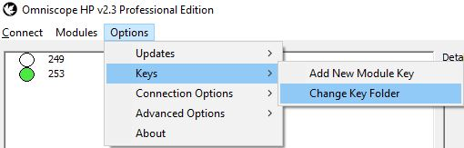
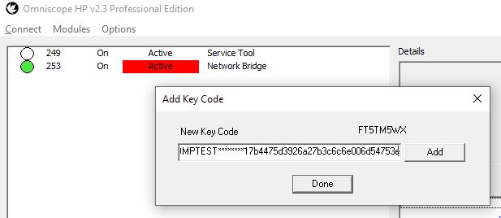
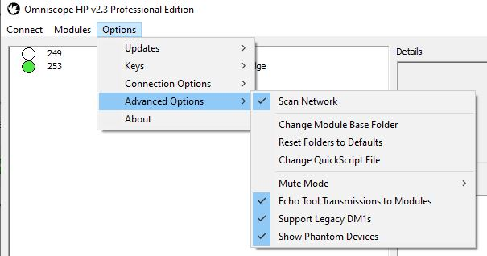
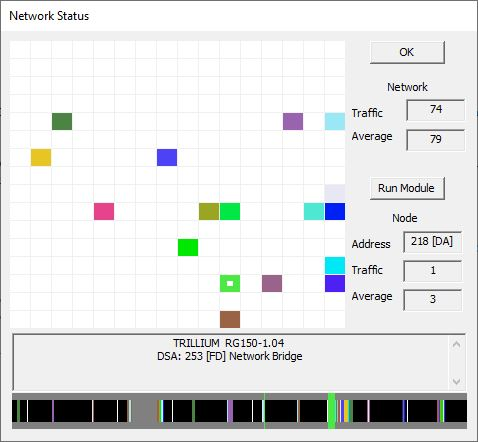
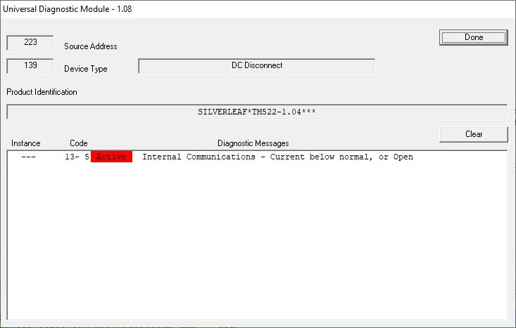
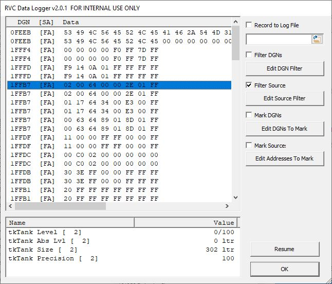
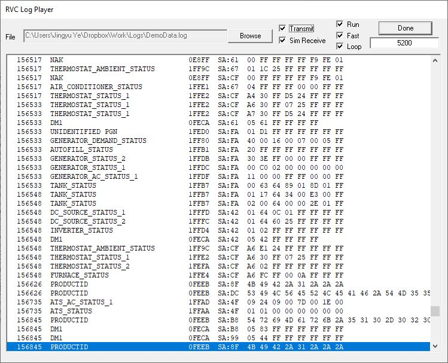
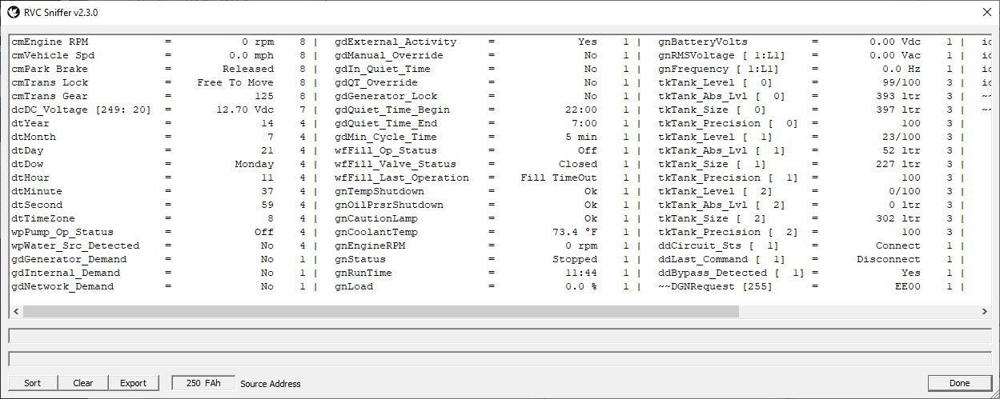

Introduction to Omniscope
Installation
Installing the Files
By default, the installation program installs Omniscope.exe and the supporting files and tools at C:\Omniscope.
If you want to install it elsewhere, the easiest way is to simply move or rename the Omniscope folder after installation.
Managing Keys
You may install and run Omniscope on as many computers as you wish, but each computer requires a key to connect to any specific RV-C adapter. Some Omniscope tools, such as RCT, have their own keys as well. To run such a tool your computer must contain valid keys for both Omniscope and the tool.
A key is simply a piece of text, and keys are stored in one or more text files in the Omniscope folder or its subfolders. Omniscope scans every text file with a name starting in "key" and collects the keys they contain. It ignores duplicates and expired keys. If you are sharing adapters and tools across multiple computers, you can collect the keys in one or more key files and either copy them to each computer, or if the computers are networked, you can put the key files on a shared drive. In Omniscope, on each computer select Options-Change Key Folder and select the network folder.

As old keys expire or you add more tools, you will need to add new keys. You may do this in one of three ways.
- Directly in Omniscope by selecting Options-Add New Key, and typing or cut-and-pasting the key text. This adds the key to the "key.txt" file.
- Adding a new key file to the folder. The filename must start with "key" and use the ".txt" extension.
- Adding the key text to an existing key file. The text must not have any leading or trailing spaces or tabs.

All keys are tied to a specific RV-C adapter ID. The ID should be printed on the adapter, or you can read it through Omniscope by selecting Option-Add New Key. The ID is an eight-character string. In the above example, the ID is "FT5TM5WX".
Configuring Omniscope
Most applications do not require any special configuration. In some cases you may need to access the following settings contained in the Options menu.
- Connection Options
- Connect on Startup.
- USB Adapter Type. The FT and OB series refers to the first two letters of the adapter ID.
- Data Rate. RV-C runs at 250 kbps. You can use Omniscope to log data from J1939 and other protocols, some of which run at 500 kbps.
- Advanced Options
- Scan Network.
- Change Module Base Folder. This setting allows the tools and support files to be placed in a separate drive or folder than the main program. This may be useful for networked computers.
- Reset Folders to Defaults. This resets the several folder settings.
- Change QuickScript file.
- Mute Mode. The RCT Tool will often disable Omniscope's ability to transmit messages. The tool should restore the setting at the end of the test, but if it fails you may need to manually restore this setting to "Transmit NormallY"
- Echo Tool Transmissions to Modules. The RCT Tool may also change this setting according to the requirements of a specific test. Most tools don't care, but if you want tool activity to show up in data logs, make sure this is enabled.
- Support Legacy DM1s.
- Show Phantom Devices. This can be necessary when trying to monitor products that are not fully RV-C compliant.

If Omniscope crashes on startup, hold down the Alt key while starting up the program. This usually happens because the program can't find the adapter. You may wish to turn off the Connect on Startup setting.
Running Omniscope
Understanding the Main Window

There are three windows within the main screen. At the left is the Device List. It displays every RV-C device found on the network and its diagnostic status. Note that a product may implement more than one "device" - an inverter/charger, for example, will show up as both an inverter and a charger.
At the upper right is a window showing more details on whatever device is selected in the Device List. At lower right is the Module List, a list of tool modules that might be relevant to that device. You can also right-click on a device in the Device List and get a shorter list of the primary tool modules for that device.
Running a Tool
To run a tool module, first select the device that the tool is targeted to. If you select Service Tool, which is always at address 249, the tool module will target the entire network. Once a device is selected, you may either:
- Double-click on the Device. This will bring up the default tool module for that device, if one is defined.
- Right-click on the Device and select a tool module from the menu that appears.
- Double-click on a tool module in the Module List.
- Click on "Run Module Not Listed Here" and directly select the executable file.
- Select Modules-Run Unlisted Module or Modules-Run Selected Module.
If you try to run a tool module directly through Windows, it generally will either not start or will start and do nothing useful, as it will lack the information from Omniscope necessary to run.
Network Monitor
Selecting Modules-Network Monitor brings up the Network Monitor box.

This is an excellent tool for monitoring the overall status of the network. The grid indicates the 256 different source addresses available, and the colored boxes each indicate the node that is using that address. At the right are indicators of the overall network traffic and the traffic being generated by the selected node. At the bottom of the screen are more details about the selected node and a graphic representation of the message traffic. Each vertical bar in the traffic graphic represents a message transmitted by a specific node - the color of the bar matches the color in the grid. The bars for the selected node are taller than rest of the bars.
The absolute maximum amount of traffic that an RV-C network can support is a little over 1200 messages per second. In practice, 700 messages per second is a more realistic boundary - some headroom is necessary to ensure that nodes can transmit messages reliably and process incoming messages without overflowing their queues.
Useful Tools
Universal Diagnostic Reader

This is a general-purpose DM_RV reader, comparable to an auto technicians "scanner".
Data Logger

This data logging tool can be set to log data from specific addresses and/or specific DGNs, highlight certain addresses and/or DGNs, and it allows individual messages to be inspected. Logs can be saved to a file and played back with the Log Player.
Log Playback

The playback tool works with the files created by the data logger. You can click on a single message to play back that specific message, or if Run is selected, it shall begin playing back the log in sequence.
The various settings have the following functions:
- Transmit. If checked, the messages are transmitted by the tool onto the RV-C network. The messages will be transmitted with the original source addresses, not Omniscope's.
- Sim Receive. If checked, the messages will be routed to any Omniscope tool modules currently running. Note that both of these can be checked.
- Run. If checked, the logged messages will be transmitted sequentially. If not, only the message clicked will be transmitted.
- Fast. If checked, the tool will attempt to play back the log at the speed it was taken. The playback timing is only approximate. If not checked, the playback will be approximately 10 messages per second.
- Loop. If checked, the log will be played back in a continuous loop.
RV-C Sniffer

This tool module parses incoming RV-C messages. Every message from the targeted node is immediately parsed and displayed, allowing troubleshooting in real time.
The sniffer is also useful when analyzing logged data. Use the playback tool with the Sim Receive box checked, and run the sniffer alongside it.
If you have trouble targeting the specific address that you want to sniff, use the Network Monitor, click the grid at the desired address, and click the 'Run Module' button.